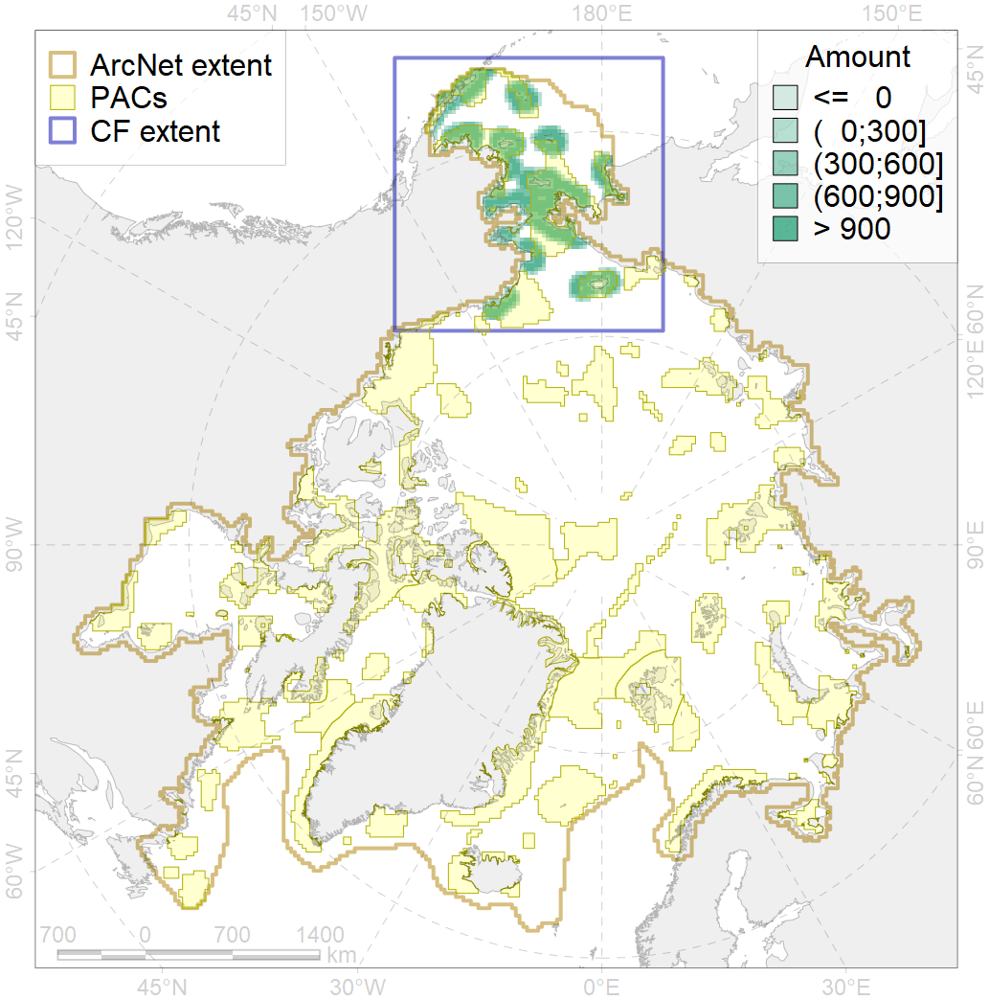
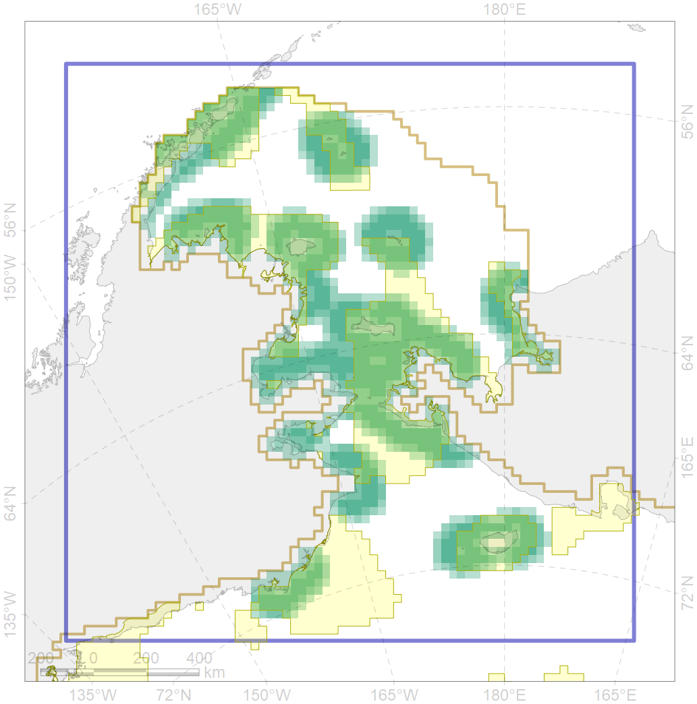

6107

| CF ID | 6107 |
| CF Name | Horned puffin (Fratercula corniculata) breeding colonies buffer feeding area |
| Time Period | 1950-2012 |
| Source(s) | Circumpolar Seabird Data Portal http://axiom.seabirds.net/maps/js/seabirds.php?app=circumpolar#z=2&ll=NaN,0.00000, Barret 1994, Krasnov & Ezhov 2013, Bakken, 2000, Melnikov et al 2012, Krasnov et al 2007, Gerasimova 1962, Frantzen et al 1993, Øien 2004, Gavrilo et al 1993, Golovkin 1972, Uspensky 1956, Strom et al 1995, Strom et al 1994, Kalyakin 1993, Kalyakin 2001, Kalyakin & Ponomareva 1999, Pokrovskaya & Tertitski 1993, Strom et al 1997, Seabird colony databases of the Barents sea region, Boertmann et al 1996, Boertmann 2004, Merkel et al 2007, Irons et al 2015 |
| Seasonality | May-August |
| Depth Horizon | <0 m |
| Methodology | Buffer around colonies |
| Author Name | Gavrilo, Tertitski |
| Notes | |
| Conservation Target Set in the Scenario | 0.24 |
| Conservation Target Achieved in the Scenario | 0.616 (Scenario: 256.6%) |
| PAC ID | Proportion in the PAC | Contribution to ArcNet Target Achievement | PAC’s Contribution to the Achieved Target |
|---|---|---|---|
| 1 | 6.8% | 27.8% | 10.8% |
| 2 | 4.1% | 15.3% | 6.0% |
| 3 | 13.8% | 52.6% | 20.5% |
| 4 | 3.2% | 10.9% | 4.3% |
| 5 | 25.3% | 98.0% | 38.2% |
| 6 | 0.1% | 0.5% | 0.2% |
| 7 | 5.9% | 24.0% | 9.3% |
| 60 | 4.4% | 14.9% | 5.8% |
| inner | 63.6% | 244.0% | 95.1% |
| outer | 36.4% | 12.6% | 4.9% |